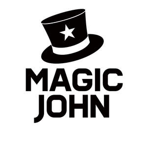

Trade Mark Journal No.2025/017 25 April 2025
UK00004187528 11 April 2025 (3,8,11,12,21,35)

- Class 3
- Aromatherapy preparations; Ethereal oils for fragrancing; Automobile cleaners; Aromatherapy pillows comprising potpourri in fabric containers; Cosmetics for personal use; Aromatherapy lotions; Perfume oils; Cosmetic hair care preparations; Cosmetic preparations for the care of mouth and teeth; Humectants; Room perfume sprays; Scented oils; Fragrance emitting wicks for room fragrance; Aromatherapy creams; Air fragrancing preparations; Chrome cleaners.
- Class 8
- Safety razors; Cutlery; Hammers; Cutters; Electric beard trimmers; Electric hair curling irons; Graving tools [hand tools]; Animal shearing implements; Sharpening stones; Sprays [hand-operated tools]; Hand-operated implements; Gardening tools (Hand operated -); Clothes irons; Drills (Hand-operated -).
- Class 11
- Handheld spotlights; Purification machines (Air -); Hair dryers; Defrosters for vehicles; Animal feed drying installations; Humidifiers; Dryers (Air -); Lamps; Portable steam sterilizers; Heat pads for warming; Projection lamps; Electric fans; De-humidifiers; Electric cooking pots.
- Class 12
- Protective shrouds for vehicles [shaped]; Motorcycle kickstands; Window rain guards for cars; Cigarette lighters for automobiles; Automotive interior trim; Air pumps for automobiles; Car sun blinds; Pet safety seats for use in vehicles; Pumps for inflating vehicle tyres; Windshield wipers; Bicycle stands [kickstands]; Seats (Vehicle -).
- Class 21
- Insulated mugs; Ultrasonic pest repellers; Pets (Litter boxes [trays] for -); Scoops for the disposal of pet waste; Pet treat jars; Cages for pets; Food containers for pet animals; Combs for animals; Brushes for pets; Pet feeding dishes; Toothbrushes for pets; Animal-activated pet feeders; Aromatic oil diffusers, other than reed diffusers, electric and non-electric; Cages for carrying pets; Automatic pet feeders.
- Class 35
- Pay per click advertising; Television advertising; Bill-posting; Radio advertising; Advertising and publicity services; Online advertising on computer networks; Export and import agencies; Shop window dressing; Search engine optimisation for sales promotion; Commercial administration of the licensing of the goods and services of others; Providing business information via a website; Organization of fashion shows for promotional purposes; Organization of exhibitions for commercial or advertising purposes; Publication of publicity texts; Marketing services; Promotion, advertising and marketing of on-line websites.
Shenzhen Rurun Digital Technology Co., Ltd.
Representative: Dingyuan Ltd